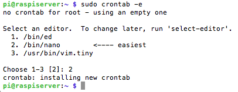

Para hacer que la conexión al servidor web sea segura, es decir, utilice el protocolo HTTPS en lugar de HTTP, es necesario el uso de un certificado generado por una Entidad Certificadora y habilitar el acceso al puerto 443 desde el exterior. Para que todo funcione correctamente, en primer lugar, hay que crear una nueva redirección de puerto para que al intentar acceder mediante HTTPS desde el exterior,se acceda al servidor. Para ello se redirecciona el puerto 443 del mismo modo que se ha hecho anteriormente para el 80 en el router. Ahora habrá dos reglas de reenvío de puertos en el router, apuntando ambas al servidor web
Let's Encrypt es una autoridad de certificación que se puso en marcha el 12 de abril de 2016 y que proporciona certificados X.509 gratuitos para el cifrado de Seguridad de nivel de transporte (TLS) a través de un proceso automatizado diseñado para eliminar el complejo proceso actual de creación manual, la validación, firma, instalación y renovación de los certificados de sitios web seguros.
El proyecto tiene como objetivo hacer conexiones cifradas a servidores Web. Al eliminar el pago, la configuración del servidor web, gestión de correo electrónico de validación y las tareas de renovación del certificado, está destinado a reducir significativamente la complejidad de la configuración y el mantenimiento de cifrado TLS. En un servidor web Linux, la ejecución de dos comandos es suficiente para configurar el cifrado HTTPS y adquirir e instalar certificados en el plazo de 20 a 30 segundos.
Pretende ser lo más transparente posible, tanto para proteger su propia integridad como para evitar ataques e intentos de manipulación. Así, se publican regularmente informes de transparencia, se registran todas las transacciones ACME (por ejemplo, mediante el uso de un Certificado de Transparencia), y se usan estándares abiertos y software libre tanto como sea posible.
Let's Encrypt está siendo desarrollado por el Internet Security Research Group. Entre sus patrocinadores están la Electronic Frontier Foundation (EFF), la Fundación Mozilla, OVH, Akamai, y Cisco Systems. Otros colaboradores incluyen la Autoridad de Certificados IdenTrust, la Universidad de Michigan (U-M), la Stanford Law School, la Fundación Linux y Stephen Kent de IBM y Alex Polvi de CoreOS.
Let’s Encrypt utiliza el protocolo ACME (Automatic Certificate Management Environment) , el cual se basa en un proceso en dos pasos, por un lado la validación del dominio y por otro la solicitud del certificado. En la documentación oficial muestra un ejemplo especificando todo el proceso.
Para proceder a la obtención e instalación en el servidor del certificado, se usará el script CERTBOT que ofrece la propia entidad para facilitar el proceso. Cerbot es una herramienta que permite activar automáticamente el certificado ssl a través de Let’s encrypt. La instalación es sencilla y se encuentra explicada en la web de la EFF. En el menú que muestra se selecciona el servidor que se vaya a usar (en este caso Apache) y el sistema operativo (Debian 9 stretch) y automáticamente muestra la explicación del proceso de instalación.
Nota: Como se puede apreciar en las capturas anteriores, se muestran un par de errores que he considerado importante nombrar ya que pone de manifiesto un error muy infantil, fácil de cometer y que puede hacer que se pierda mucho tiempo. En la configuración del servidor web Apache (apartado: instalación de un servidor web con LAMP) y como consejo de seguridad, se habla de anular el archivo de configuración por defecto del servidor web y crear uno nuevo, llamado en este caso raspberryasir.conf. Pues bien, en la edición de ese archivo se muestra el nombre del dominio www.raspberryasir.com (de nuevo a modo de ejemplo), pero la creación real del dominio ha sido www.raspberryasir.es, y de ahí el error que muestra el script certbot cuando trata de crear el certificado, ya que lo primero que compueba son las dns del dominio en cuestión. Una vez subsanado el error en el archivo de configuración se puede observar que el certificado se crea sin problemas, tan sólo se debe constestar si se desea que se reenvien las peticiones http a https para evitar que se dupliquen, a lo que se contesta que SI, y lo hace el script automáticamente.
Como se observa en la captura anterior, se detectan errores al ejecutar el script como aconseja la web de certbot en la versión debian stretch, por tanto he decidido a partir de aquí usar el script de forma manual que funciona para todas las versiones de debian, incluido raspbian, ejecutando el siguiente comando $ ./certbot-auto renew --dry-run.
Lo siguiente es probar el comando, pero añadiéndole un "post hook", que permite ejecutar un comando por shell tras el intento de renovación del certificado. Esto se hace para que Apache cargue los nuevos certificados, ya que podría pasar que los tuviera renovados y que, al no recargar la configuración, siguiera usando los antiguos y estos caducaran. Más información aquí
Por último, si la simulación ha sido correcta, se añade dicho proceso de renovación a crontab para que se ejecute automáticamente cuando la licencia vaya a expirar,hay que seguir los siguientes pasos:

Se puede usar un Comprobador SSL ssl checker para verificar si los certificados se han renovado con éxito.
Para dejarlo completamente configurado de manera que, se indiquen o no las www al inicio de la dirección, la dirección mostrada sea siempre la completa, hay que hacer un último ajuste en el fichero raspberryasir.conf de Apache, añadiendo ciertas líneas a la redirección ya realizada por la ejecución de CERTBOT en la configuración del VirtualHost.
Esta página forma parte del proyecto Mini servidor para prácticas ASIR por Nacho López, que se distribuye bajo una Licencia Creative Commons Reconocimiento-CompartirIgual 4.0 Internacional (CC BY-SA 4.0).